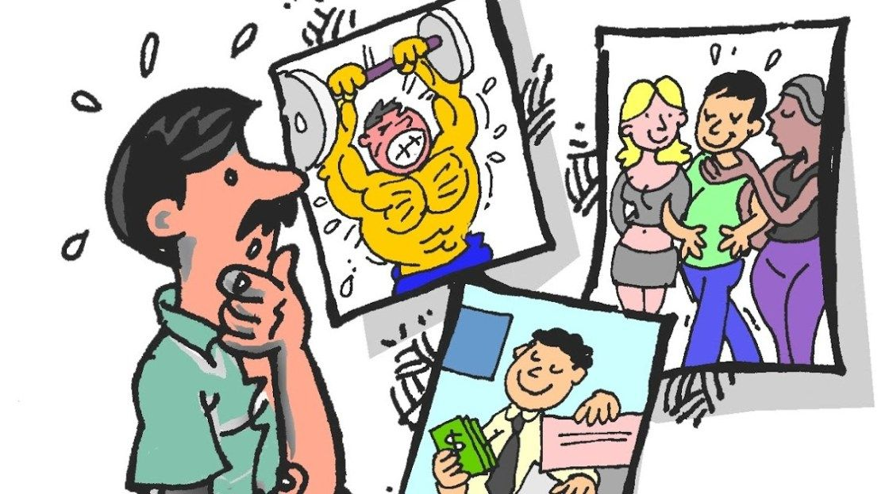
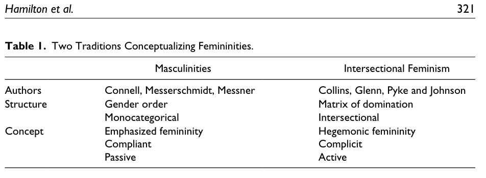
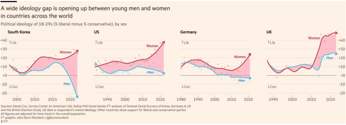

Clase 8: Feminidades y Masculinidades
SOL191 · Instituto de Sociología · PUC
SOL191 · Clase 8: Feminidades y Masculinidades
Imagen creada por inteligencia artificial para: “foto de cuerpo completo de un hombre de verdad siendo masculino”

¿Cuáles son las consecuencias de esta necesidad de demostrar la masculinidad hegemónica para la vida de los hombres?
Dos discursos actuales que han tomado popularidad en redes sociales: muchas críticas y también mucho respaldo, personas que se sienten muy identificadas con estas ideas y sienten que les están dando una voz.
Son ejemplos de discursos que van contra ideas actuales liberales con respecto al género. Hay muchos otros; estos son sólo dos ejemplos.
Andrew Tate
Influencer en redes sociales, empresario, ex boxeador. Ha sido acusado de incentivar la misoginia en hombres jóvenes.
Más de 8,5 millones de seguidores en X, tercera persona más googleada en 2023.
Estee Williams
25 años, influencer “tradwife”. 1,3 millones de likes en TikTok.
Distancia discursiva (discursive distance)
Préstamo estratégico (strategic borrowing)
Fortaleciendo límites (boundary strengthening)
Cómo dos tradiciones sociológicas explican el rol de las feminidades en la dominación social
Connell y otros — Masculinidades
Hill Collins y otros — Dominación interseccional

Ideales culturales de feminidad más celebrados en un momento y lugar determinados y que sirven para defender y legitimar todos los ejes de opresión en la matriz de dominación simultáneamente.
— Collins
Las feminidades hegemónicas pueden recibir ciertos “bonos” o “premios”. ¿Ejemplos?
Estudia el proceso de construcción de masculinidades hegemónicas en la clase dominante chilena.
Grupos de 4-5 estudiantes

SOL191 Sociología del Género · Clase 8